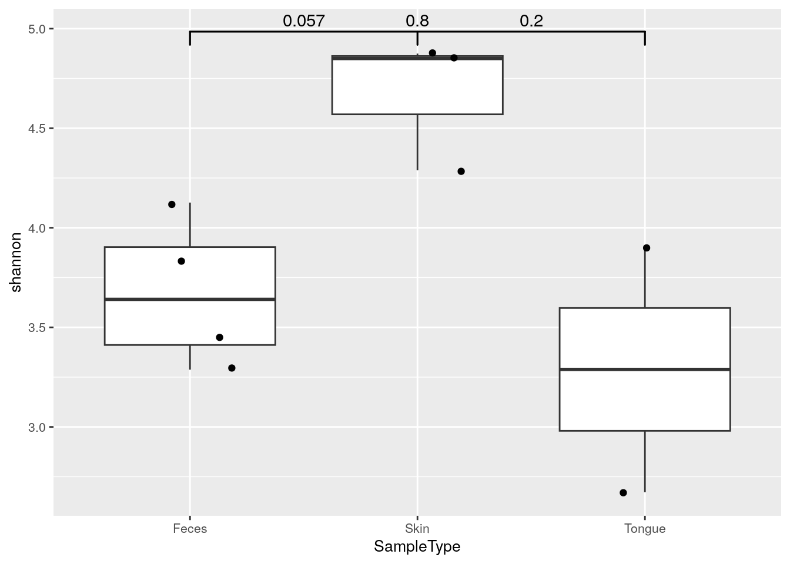
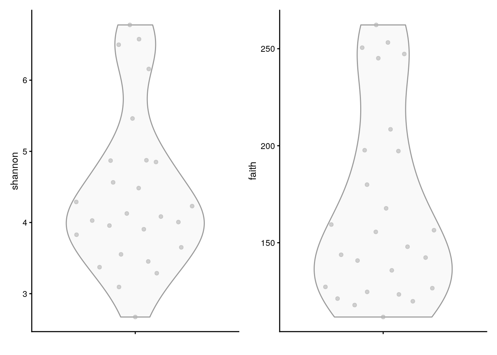
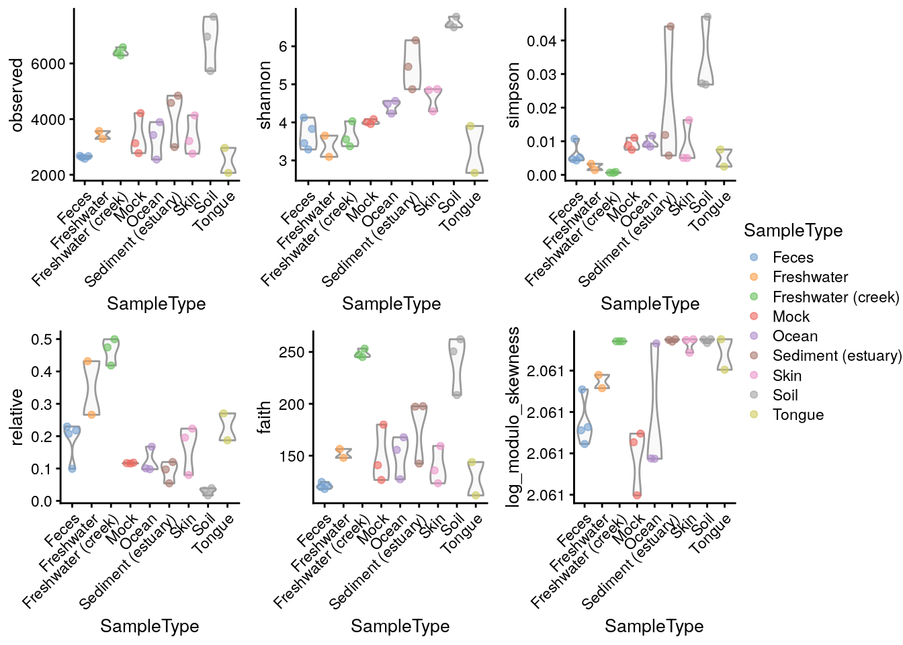

Chapter 7 Community Diversity
Diversity estimates are a central topic in microbiome data analysis.
There are three commonly employed levels of diversity measurements, which are trying to put a number on different aspects of the questions associated with diversity (Whittaker 1960).
Many different ways for estimating such diversity measurements have been described in the literature. Which measurement is best or applicable for your samples, is not the aim of the following sections.
Alpha diversity, also sometimes interchangeably used with the term species diversity, summarizes the distribution of species abundances in a given sample into a single number that depends on species richness and evenness. Diversity indices measure the overall community heterogeneity. A number of ecological diversity measures are available. The Hill coefficient combines many standard indices into a single equation that provides observed richness, inverse Simpson, and Shannon diversity, and generalized diversity as special cases. In general, diversity increases together with increasing richness and evenness. Sometimes richness, phylogenetic diversity, evenness, dominance, and rarity are considered to be variants of alpha diversity.
Richness refers to the total number of species in a community (sample). The simplest richness index is the number of observed species (observed richness). Assuming limited sampling from the community, however, this may underestimate the true species richness. Several estimators are available, including for instance ACE (A and SM 1992) and Chao1 (A 1984). Richness estimates are unaffected by species abundances.
Phylogenetic diversity was first proposed by (Faith 1992). Unlike the
diversity measures mentioned above, Phylogenetic diversity (PD)
measure incorporates information from phylogenetic relationships
stored in phylo tree between species in a community (sample). The
Faith’s PD is calculated as the sum of branch length of all species in
a community (sample).
Evenness focuses on species abundances, and can thus complement the number of species. A typical evenness index is the Pielou’s evenness, which is Shannon diversity normalized by the observed richness.
Dominance indices are in general negatively correlated with diversity, and sometimes used in ecological literature. High dominance is obtained when one or few species have a high share of the total species abundance in the community.
Rarity indices characterize the concentration of taxa at low abundance. Prevalence and detection thresholds determine rare taxa whose total concentration is represented as a rarity index.
7.1 Estimation
Alpha diversity can be estimated with wrapper functions that interact
with other packages implementing the calculation, such as vegan
(Oksanen et al. 2020).
7.1.1 Richness
Richness gives the number of features present within a community and can be calculated with estimateRichness. Each of the estimate diversity/richness/evenness/dominance functions adds the calculated measure(s) to the colData of the SummarizedExperiment under the given column name. Here, we calculate observed features as a measure of richness.
tse <- mia::estimateRichness(tse,
assay.type = "counts",
index = "observed",
name="observed")
head(tse$observed)## CL3 CC1 SV1 M31Fcsw M11Fcsw M31Plmr
## 6964 7679 5729 2667 2574 3214This allows access to the values to be analyzed directly from the colData, for example
by plotting them using plotColData from the scater package (McCarthy et al. 2020).
library(scater)
plotColData(tse,
"observed",
"SampleType",
colour_by = "Final_Barcode") +
theme(axis.text.x = element_text(angle=45,hjust=1)) +
ylab(expression(Richness[Observed]))Figure 7.1: Shannon diversity estimates plotted grouped by sample type with colour-labeled barcode.
7.1.2 Diversity
The main function, estimateDiversity, calculates the selected
diversity index based on the selected assay data.
tse <- mia::estimateDiversity(tse,
assay.type = "counts",
index = "shannon",
name = "shannon")
head(tse$shannon)## CL3 CC1 SV1 M31Fcsw M11Fcsw M31Plmr
## 6.577 6.777 6.498 3.828 3.288 4.289Alpha diversities can be visualized with boxplot. Here, Shannon index is compared
between different sample type groups. Individual data points are visualized by
plotting them as points with geom_jitter.
geom_signif is used to test whether these differences are statistically significant.
It adds p-values to plot.
library(ggsignif)
library(ggplot2)
library(patchwork)
library(ggsignif)
# Subsets the data. Takes only those samples that are from feces, skin, or tongue,
# and creates data frame from the collected data
df <- as.data.frame(colData(tse)[tse$SampleType %in%
c("Feces", "Skin", "Tongue"), ])
# Changes old levels with new levels
df$SampleType <- factor(df$SampleType)
# For significance testing, all different combinations are determined
comb <- split(t(combn(levels(df$SampleType), 2)),
seq(nrow(t(combn(levels(df$SampleType), 2)))))
ggplot(df, aes(x = SampleType, y = shannon)) +
# Outliers are removed, because otherwise each data point would be plotted twice;
# as an outlier of boxplot and as a point of dotplot.
geom_boxplot(outlier.shape = NA) +
geom_jitter(width = 0.2) +
geom_signif(comparisons = comb, map_signif_level = FALSE) +
theme(text = element_text(size = 10))
7.1.3 Faith phylogenetic diversity
The Faith index is returned by the function estimateFaith.
## [1] 0 0 0 0 0 0Note: because tse is a TreeSummarizedExperiment object, its phylogenetic tree is used by default. However, the optional argument tree must be provided if tse does not contain one.
Below a visual comparison between shannon and faith indices is shown with a violin plot.
plots <- lapply(c("shannon", "faith"),
plotColData,
object = tse, colour_by = "SampleType")
plots[[1]] + plots[[2]] +
plot_layout(guides = "collect")
Alternatively, the phylogenetic diversity can be calculated by mia::estimateDiversity. This is a faster re-implementation of
the widely used function in picante W et al. (2010).
Load picante R package and get the phylo stored in rowTree.
7.1.4 Evenness
Evenness can be calculated with estimateEvenness.
## [1] 0.026871 0.027197 0.047049 0.005179 0.004304 0.0050117.1.5 Dominance
Dominance can be calculated with estimateDominance. Here, the Relative index is calculated which is the relative abundance of the most dominant species in the sample.
## CL3 CC1 SV1 M31Fcsw M11Fcsw M31Plmr
## 0.03910 0.03226 0.01690 0.22981 0.21778 0.223297.2 Visualization
A plot comparing all the diversity measures calculated above and stored in colData can then be constructed directly.
plots <- lapply(c("observed", "shannon", "simpson", "relative", "faith", "log_modulo_skewness"),
plotColData,
object = tse,
x = "SampleType",
colour_by = "SampleType")
plots <- lapply(plots, "+",
theme(axis.text.x = element_blank(),
axis.title.x = element_blank(),
axis.ticks.x = element_blank()))
((plots[[1]] | plots[[2]] | plots[[3]]) /
(plots[[4]] | plots[[5]] | plots[[6]])) +
plot_layout(guides = "collect")